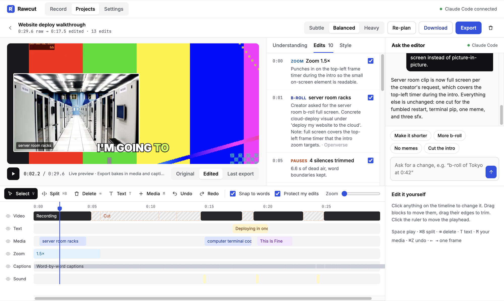

Record your screen. Your own AI edits it.
Rawcut watches your whole recording first, then cuts the dead air, zooms in on what matters and adds real b-roll, memes and sound effects from the internet. Nothing AI-generated.

How it works
Understands first. Edits second.
Most auto-editors chop at random. Rawcut transcribes and looks at the entire video before it changes a single frame.
Record your screen, a window or a tab with your mic, or upload a video you already have.
It reads the transcript and looks at frames to work out the topic, the key moments and where the pauses and retakes are.
Cuts, zooms, captions and real media land on a timeline. Ask for changes in chat, or edit anything by hand.
Bring your own AI
No subscription and no credits. Connect something you already have. With Ollama, everything stays on your computer.
Real media only
Every clip, image, meme and sound comes from a real source, and Rawcut shows you where each one came from.
MIT licensed. No account, no watermark.
Your video never leaves your computer.
ffmpeg and speech-to-text are built in.
Every AI choice is a clip you can move, trim or swap.
Download
Get Rawcut for your computer
Pick your system. Everything Rawcut needs is included in the download.
macOSYour system
macOS 12 or newer.
WindowsYour system
Windows 10 or 11.
LinuxYour system
64-bit Intel/AMD (x64).
chmod +x Rawcut-*.AppImage, then open it.Prefer the source? Run it with Node on any system · All releases